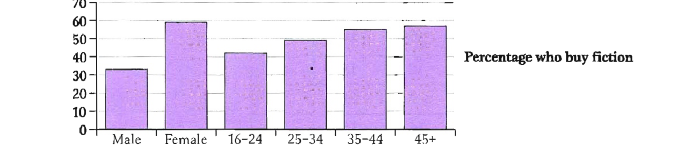
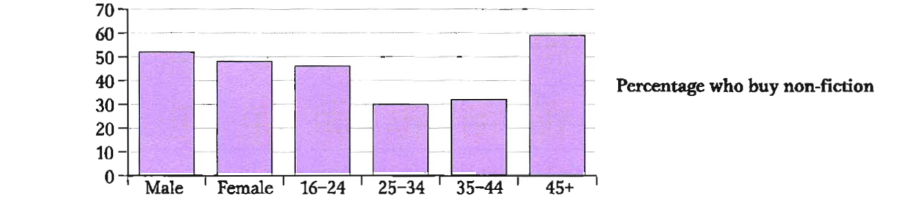
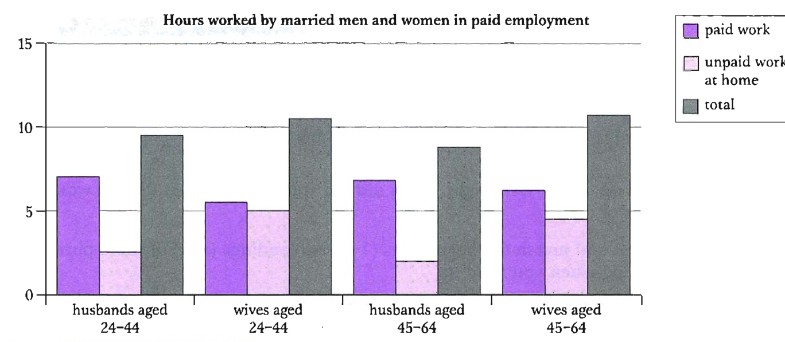

Pre-listening: young or older athletes?
You are going to hear a talk comparing the performance of older and younger athletes.
Before you listen, look at the phrases from the talk. Which ones would you associate with young athletes and which ones with older athletes?
This is a prediction task — there is no answer key. Listen in Exercise 2 to check your ideas.
Listen and check if you were right — Track 15
Track 15 — older and younger athletes
Context listening — a talk
Listen again and say whether these sentences are true or false — Track 15
Track 15 — older and younger athletes (again)
Context listening — true or false
Listen again and say whether these sentences are true or false. Correct the sentences that are false.
Underline the language used to compare in Exercise 3
Underline the language used to compare in Exercise 3, then answer the questions.
B1 — Comparing adjectives
| adjective | comparative | superlative |
|---|---|---|
| one syllable: hard | adjective + -er: harder | the + adjective + -est: the hardest |
| one syllable ending in -e: nice | adjective + -r: nicer | the + adjective + -st: the nicest |
| one syllable ending in vowel + consonant: fat | last consonant doubled + -er: fatter | last consonant doubled + -est: the fattest |
| two syllables ending in -y: happy | adjective + -ier: happier | the + adjective + -iest: the happiest |
| two or more syllables: enjoyable | more + adjective: more enjoyable | the most + adjective: the most enjoyable |
| irregular: good, bad, far | better, worse, further/farther | the best, the worst, the furthest/farthest |
Comparative adjectives
- We use comparative adjectives to compare two or more things, people or places: Younger runners will always be faster than older runners.
- or the same thing, person or place at two different times: I'm much fitter than I was last year.
- We use than after comparative adjectives to say what we are comparing something with. Sometimes we leave out the than-clause if it is clear from the context: Older athletes are getting faster and fitter. (than in the past)
Superlative adjectives
- We use superlative adjectives to compare one thing in a group with all the others in that group: The Olympics is probably the most exciting sports event in the sports calendar.
- We can modify superlatives with one of the / some of the + superlative + plural noun: It's one of the few chances we get to see some of the best athletes in the world competing against each other. Tamsin is one of the most generous people I know.
- ordinal numbers: Our team was the third best in the competition.
- We can replace the with a possessive: my best friend; his greatest achievement
B2 — Comparing adverbs
- We can compare how things are done by using more/most + adverb: Runners aged 50 and over are speeding up more rapidly than younger people. Women aged 60 to 68 improved the most markedly.
- Adverbs that have the same form as the adjective (e.g. hard, fast, straight, late, early, quick) add -er/-est: Women aged 60 to 68 run on average four minutes faster each year.
- There are some irregular adverbs (e.g. well/better/best; badly/worse/worst; far/further/furthest; little/less/least): I did worse than I had expected in the exam, so I was disappointed.
B3 — Other ways of comparing
- We use less/the least to mean the opposite of more/the most: You might imagine that the Masters Games would be less exciting to watch. That was probably the least enjoyable meal I've ever had!
- We can add emphasis with words like even, far, a great deal, a little, a lot, much + comparative: Older women showed much greater increases in speed than expected.
- in formal English with words like slightly, considerably, significantly + comparative: The figures for 2003 were significantly higher than those for the year 2000. The number of women in higher education was only slightly lower than the number of men.
- as + adjective + as to say two things are the same: My car is as old as yours. (= the two cars are the same age) Older athletes are as likely to achieve their peak fitness as younger athletes. (= they have the same chance of achieving this)
- We can say two things are different with not as + adjective/adverb + as: While they may not be as fast as their younger counterparts …
- We can add to the meaning by using just, almost, nearly, half, twice, three times etc.: In 2005, our team was almost as successful as in 2003. He can run twice as fast as the others in his team.
- We can show that a change is happening over time by repeating the comparative: Each year athletes seem to be getting better and better. Our atmosphere is gradually becoming more and more polluted. It seems less and less likely that there will be a general election this year.
- We use the + comparative + the + comparative to show that two things vary or change at the same time: It would seem that the longer athletes keep competing the greater their chances of setting new records are. The sooner the better.
B4 — Comparing quantities
| quantifier | comparative | superlative |
|---|---|---|
| a lot / much / many | more | the most |
| a few | fewer (+ plural countable noun) | the fewest (+ plural countable noun) |
| a little | less (+ uncountable noun) | the least (+ uncountable noun) |
- For plural or uncountable nouns we can compare quantities with more or most: Today's top sportspeople receive a lot more money than in the past.
- We can use fewer or the fewest with plural countable nouns, and less or the least with uncountable nouns: 25 years ago few 60-year-old men and even fewer women would have considered running a marathon. There used to be less information available about fitness.
- We can add emphasis: with a lot / many + more / fewer + plural countable noun: Increased sponsorship has given today's athletes many more opportunities to succeed. with a lot / much + more / less + uncountable noun: Today's athletes need to do much more training than in the past.
- by repeating more/less/fewer: So much in our society is about making more and more money.
- We can say something is the same or different using (not) as many/much + plural/uncountable noun (+ as): There aren't as many people doing sports at school (as there used to be).
- We can add more specific information about quantity by using half, twice, three times etc. with as many/much … as: In 2004 China won nearly twice as many silver medals as the US. The US won more than three times as many medals as Great Britain.
We can compare how similar things are using like, the same (as), similar to: Older athletes can achieve the same degree of physical improvement as those in their twenties and thirties. He swims like a fish. This film is similar to this director's last one.
Fill in the gaps with the adjectives in the box in a comparative or superlative form
Fill in the gaps with the words in brackets in a comparative or superlative form
Teacher: What are the most obvious differences you have noticed between your own country and this one?
Student: Oh, there are so many! In my country people are (not/interested) in foreigners as people here, who are much (friendly). They are always kind and welcoming. Also, the weather is very different. It's much (hot) in my country. It's only autumn but I am feeling cold here already and it's getting (cold) every day. I don't like that. Then there's the food. Your food is (not/good) ours. Our food is (spicy) and (delicious). I think it's (good) in the world! It is (not/expensive) either. I've also noticed that people here eat slightly (early) and they eat their meals (quickly). And I am beginning to change my own habits too! (long) I stay here (fast) I seem to be eating.
Fill in the gaps in the model answer below. Use one word in each gap.
The charts below show the number and types of books bought by men and women in Britain by age. Summarise the information by selecting and reporting the main features, and make comparisons where relevant.


Read the description of the table. Decide if the underlined comparisons are correct or not.
Read the description of the table below. Decide if the underlined comparisons are correct or not. If they are correct, put a tick (✓). If they are wrong, write the correct answer.
| Rank | Country | Gold | Silver | Bronze | Total |
|---|---|---|---|---|---|
| 1 | United States | 35 | 39 | 29 | 103 |
| 2 | China | 32 | 17 | 14 | 63 |
| 3 | Russia | 27 | 27 | 38 | 92 |
| 4 | Australia | 17 | 16 | 16 | 49 |
| 5 | Japan | 16 | 9 | 12 | 37 |
| 6 | Germany | 14 | 16 | 18 | 48 |
| 7 | France | 11 | 9 | 13 | 33 |
| 8 | Italy | 10 | 11 | 11 | 32 |
| 9 | South Korea | 9 | 12 | 9 | 30 |
| 10 | Great Britain | 9 | 9 | 12 | 30 |
The table shows the number of medals won by the top ten countries in the 2004 Olympic Games. The USA won greatest number of medals overall with a total of 103. They won more silver medals as gold and more medals than any other country in both categories. China had the second high number of medals at 63, but unlike the USA, China won less silver medals than gold medals. While Russia's silver medal total was more good than China's, they did not do well as China in the gold medals, winning just 27. In fact China had a more lower overall medal total than Russia but, as the table is based on the number of gold medals won, they were placed second. Similarly, Germany was significantly successful at winning medals than Japan, with a total of 48 compared to Japan's 37, but because Japan won two more gold medals that Germany they were ranked higher. Great Britain gave the worse performance in this group, winning only nine gold and nine silver medals.
Academic Writing Task 1
You should spend about 20 minutes on this task.
The chart below shows the average hours worked per day by married men and women in paid employment.
Summarise the information by selecting and reporting the main features, and make comparisons where relevant.
You should write at least 150 words.

Model answer
Men aged 25 to 44 spend only slightly more time working outside of the home than men aged 45 to 64, but this figure is significantly higher than the number of hours of paid work that women of the same age do. Women in the 25 to 44 age group work almost as many hours inside the home as outside, and there is only a slight difference in the 45 to 64 age group. However, men work on average three times longer outside of the home than inside.